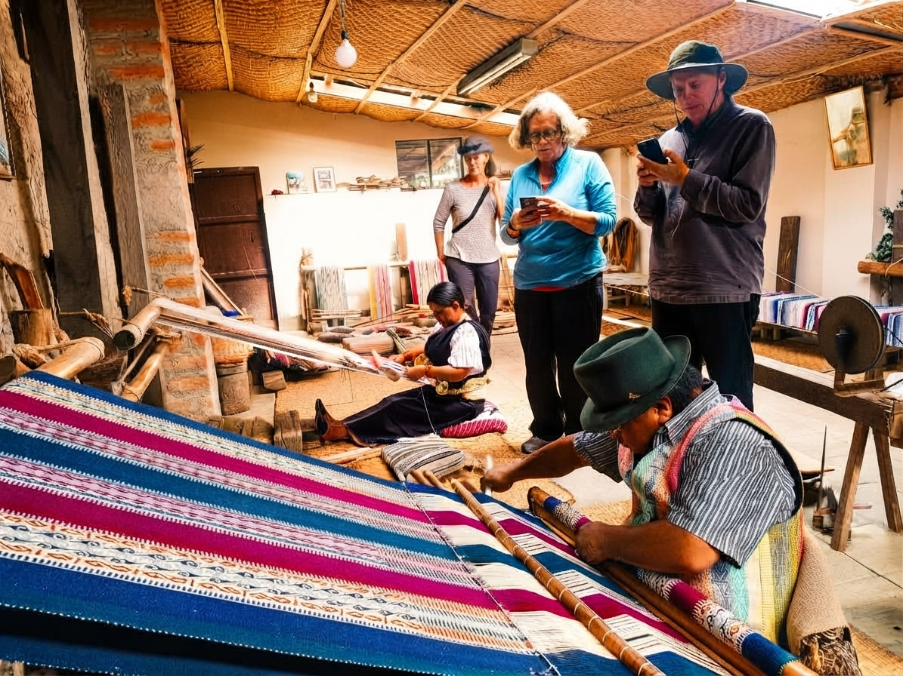
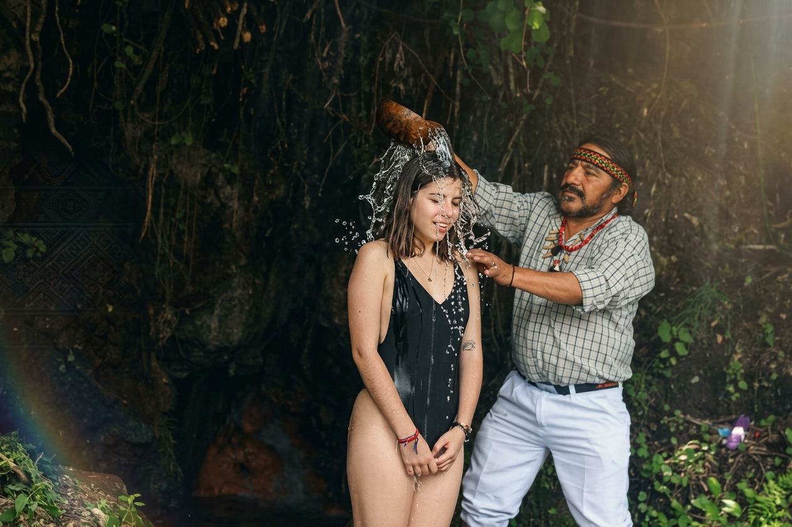
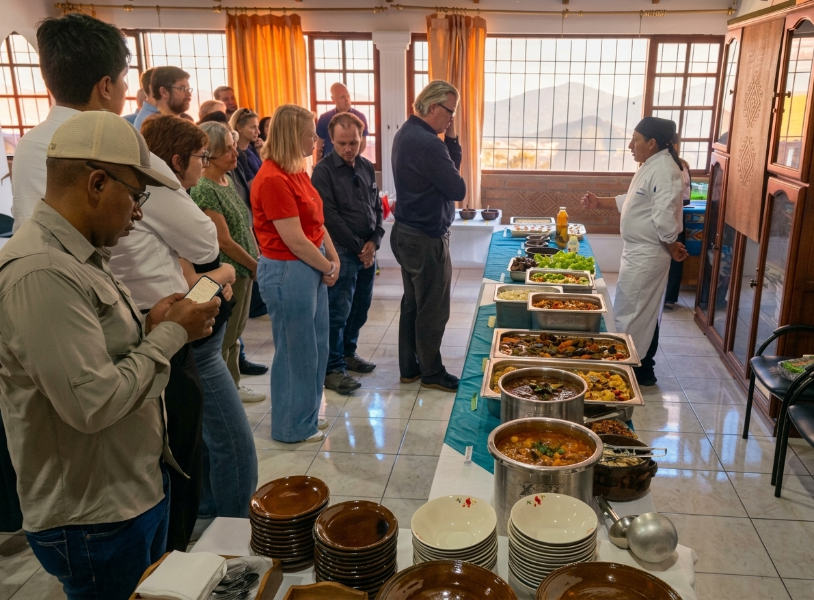
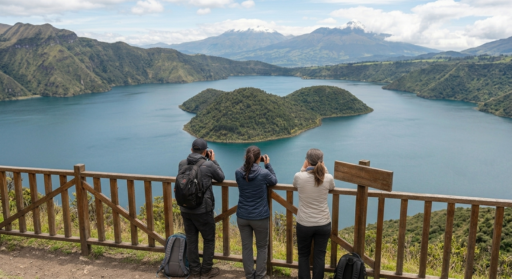
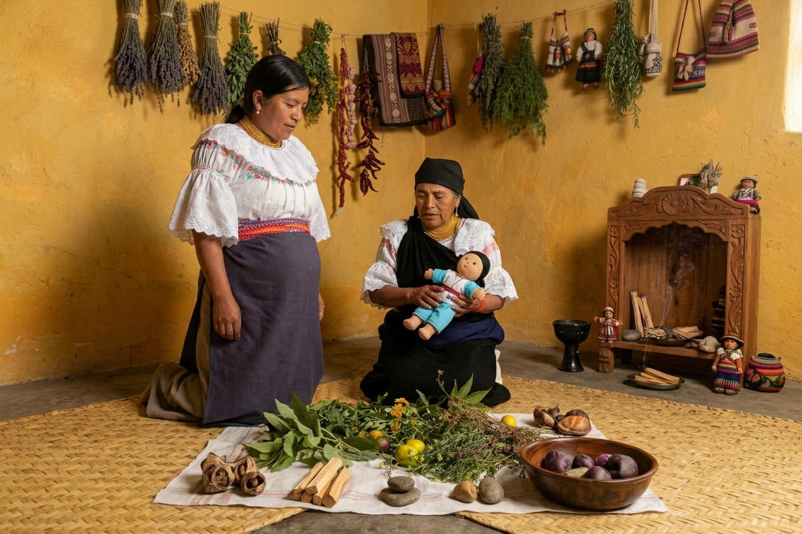
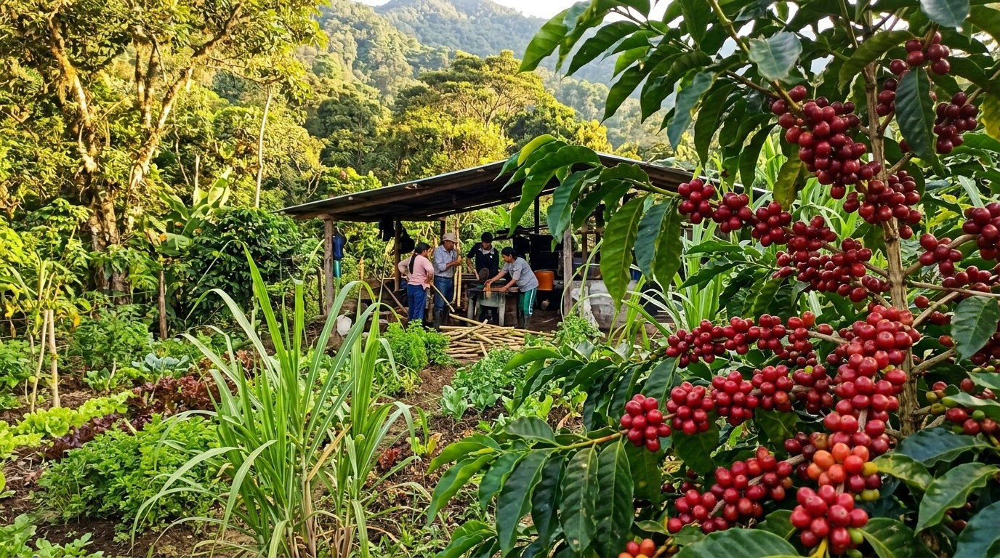
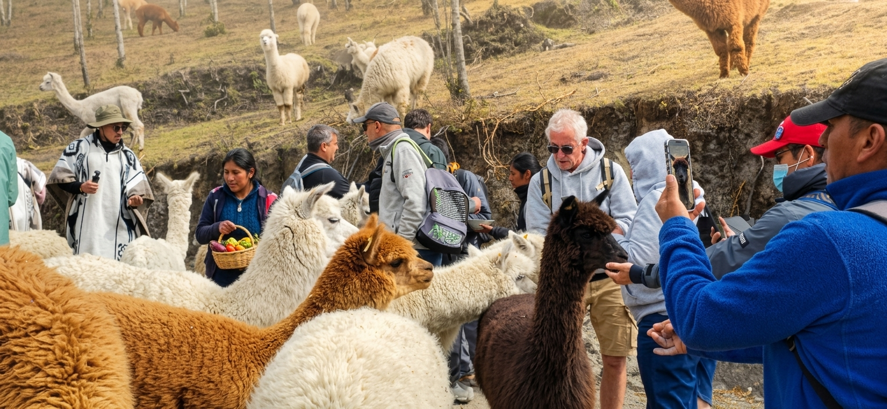

1 día
Nuestros paquetes
Experiencias que nacen de la tierra
Vive lo mejor de Ecuador con nuestros paquetes personalizados. Naturaleza, cultura, aventura y turismo vivencial Kichwa.
Paquetes disponibles
Todos nuestros paquetes incluyen guía nativo especializado, transporte y experiencias auténticas. Precios por persona con mínimo 4 pax.

1 díaTierra, Sabor y Espíritu Kichwa Cotacachi

1 díaPatrimonio Ancestral Kichwa

1 díaCuicocha Nature Trek

1 díaSaberes Ancestrales de la Tierra y la Mujer

1 díaAromas, Sabores y Aventura de Intag

1 díaEntre Alpacas y Tejidos Andinos
Encuentra la aventura perfecta
Ecuador no solo se conoce:
Ecuador no solo se conoce:
se siente, se comparte y se vive.
Te ayudamos a construir tu próxima experiencia.